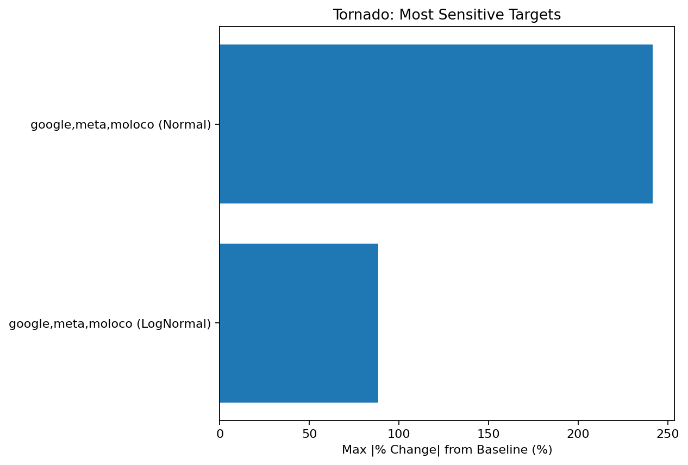
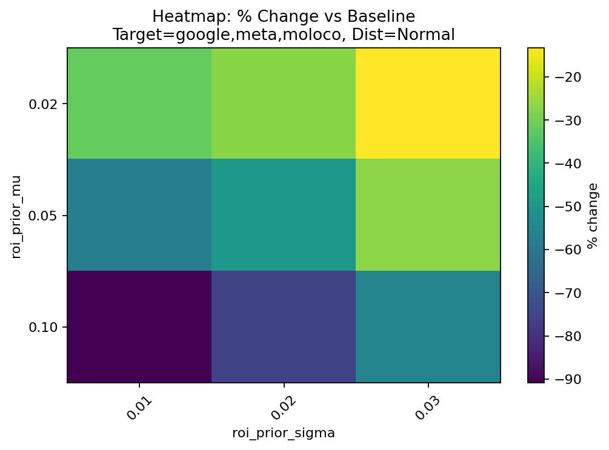
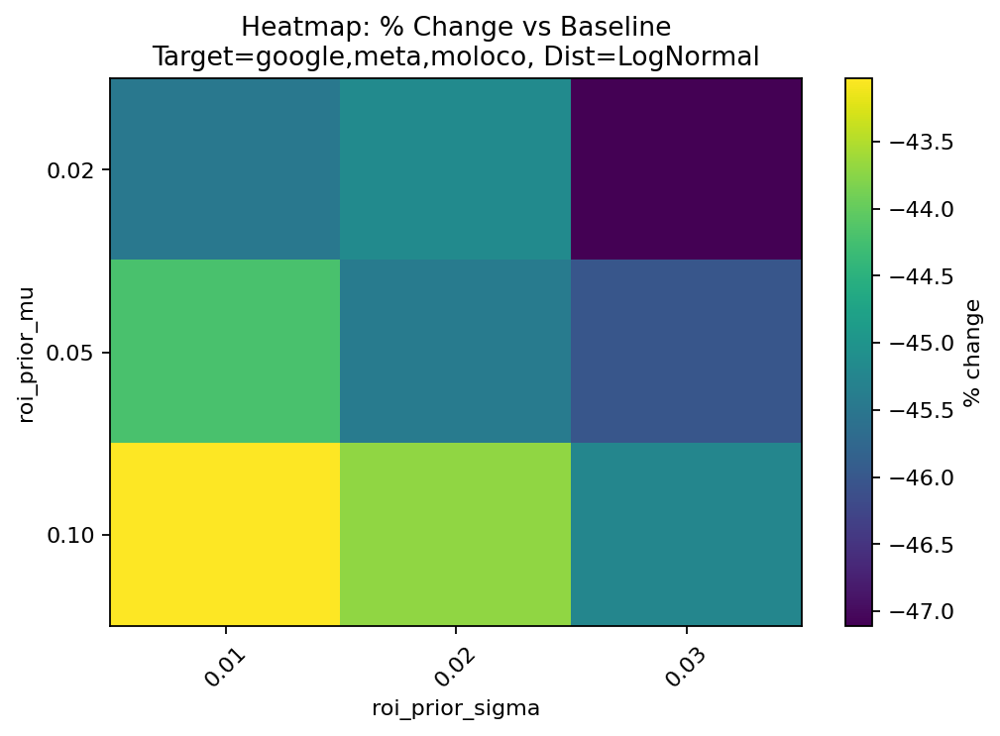

Google Meridian MMM - Prior Robustness Diagnostics
Most sensitive targets (by max absolute % change):
| Rank | Target Channel | Distribution | Baseline ROI | Max |% Change| |
|---|---|---|---|---|
| 1 | google,meta,moloco | Normal | 0.12061889 | 241.494387819354 |
| 2 | google,meta,moloco | LogNormal | 1.4225322 | 88.46876928339479 |
Recommendations:
Baseline definition. Baseline ROI is defined as the estimated ROI at the median prior mean (mu) and median prior standard deviation (sigma) within each target channel and distribution family.
Sensitivity calculation. For each scenario, percent change is computed relative to the baseline ROI. Sensitivity is summarized as the maximum absolute percent change across tested prior settings.
Visualization workflow. The report includes a tornado chart ranking the most sensitive target-distribution combinations and per-target heatmaps showing how estimated ROI changes across the prior grid.
Shows which target+prior settings produce the largest ROI movement relative to baseline.

Heatmaps (mu x sigma) by distribution

Heatmaps (mu x sigma) by distribution

Tables saved in tables/ for reproducibility.